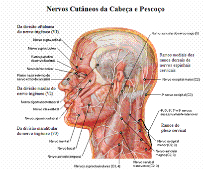

Paralisia total de todos, ou alguns, músculos da expressão facial.
Enervação da Face
Os nervos cutâneos do pescoço encobrem os nervos da face. Os ramos cutâneos dos nervos cervicais, provenientes do plexo cervical, estendem-se sobre a orelha, a face posterior do pescoço e muito da região parotídea da face (área que se estende sobre o ângulo da mandíbula). O nervo trigémeo é o nervo sensitivo para a face e é o nervo motor para os músculos da mastigação e diversos pequenos músculos.
A sobreposição das três divisões do Nervo Trigémeo é pequena, em comparação com a sobreposição considerável dos dermátomos adjacentes do tronco e dos membros.
Os processos periféricos do gânglio trigeminal constituem:
O nervo oftálmico;
O nervo maxilar;
O componente sensitivo do nervo mandibular;
Estes nervos são nomeados de acordo com as suas áreas principais de terminação – o olho, a maxila e a mandíbula, respectivamente.
Os nervos motores da face são o nervo facial, para os músculos da expressão facial, e a raiz motora do nervo mandibular para os músculos da mastigação (masseter, temporal, pterigóides medial e lateral). Estes nervos também suprem alguns músculos mais profundamente situados, descritos posteriormente em relação à boca, à orelha média e ao pescoço.

Fig.– Nervos Cutâneos da Face, in Netter 1999.
Nervo Oftálmico:
Este nervo enerva a pele da fronte, a pálpebra superior, a túnica conjuntiva e o nariz lateralmente até à ponta. Divide-se em cinco ramos, que passam para a pele:
O Nervo Lacrimal, que enerva a pele e a túnica conjuntiva da parte lateral da pálpebra superior;
O Nervo Supra-Orbital, curva-se em torno da margem superior da órbita na incisura Supra-Orbital. Divide-se em ramos que enervam a pele e a túnica conjuntiva, na parte central da pálpebra superior e a pele da fronte;
O Nervo Supra-troclear, curva-se em torno da margem superior da órbita, medial ao nervo supra-orbital. Divide-se em ramos que enervam a pele e a túnica conjuntiva, na parte medial da pálpebra superior e a pele sobre a parte inferior da fronte, próximo do plano mediano;
O Nervo Infra-troclear, deixa a órbita abaixo do músculo oblíquo superior. Enerva a pele e a túnica conjuntiva, na parte medial da pálpebra superior e a parte adjacente da parte lateral do nariz;
O Nervo Nasal Externo, deixa o nariz, emergindo entre o osso nasal e a cartilagem nasal superior. Enerva a pele da parte lateral do nariz até à ponta;
Nervo Maxilar:
Este nervo enerva a pele da parte posterior do lado do nariz, a pálpebra inferior, a bochecha, o lábio superior e o lado lateral da abertura da órbita. Divide-se em três ramos, que passam para a pele:
O Nervo Infra-Orbital, é uma continuação directa do nervo maxilar. Este nervo penetra na órbita e aparece na face através do forame infra-orbital. Divide-se imediatamente em numerosos pequenos ramos, que se irradiam a partir do forame e enervam a pele da pálpebra inferior e a bochecha, o lado do nariz e o lábio superior;
O Nervo Zigomatico-Facial, passa para a face através de um pequeno forame no lado lateral do osso Zigomático. Este nervo enerva a pele sobre a proeminência da bochecha;
O Nervo Zigimatico-Temporal, emerge na fossa temporal através de um pequeno forame na face posterior do osso Zigomático. Este nervo, enerva a pele sobre a tempora;
Nervo Mandibular:
Este nervo enerva a pele do lábio inferior, a parte inferior da face, a região temporal e parte da orelha. Divide-se m três ramos, que passam para a pele:
O Nervo Mental, emerge do foramen mental da mandíbula e enerva a pele do lábio inferior e mento;
O Nervo Bucal, emerge debaixo da margem anterior do músculo Masseter e enerva a pele sobre uma pequena área da bochecha;
O Nervo Aurículo-Temporal, sobe desde a margem superior da glândula parótida, entre os vasos temporais superficiais e a orelha. Este, enerva a pele da orelha, o meato acústico externo e a face externa da membrana do tímpano;